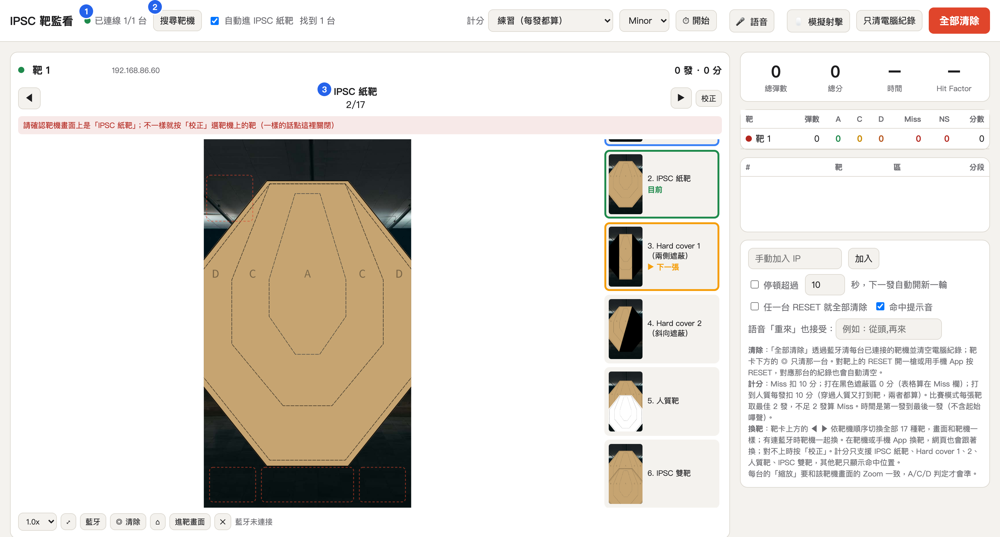
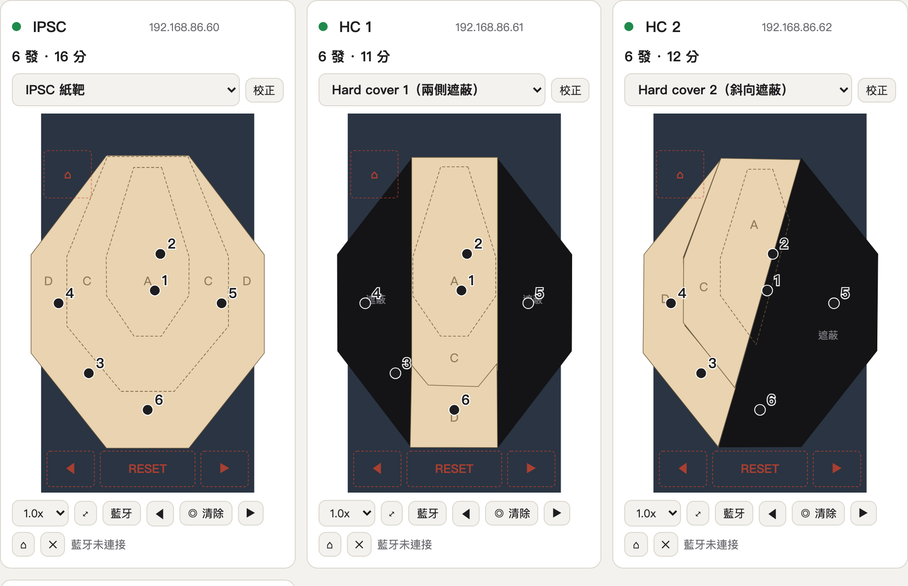
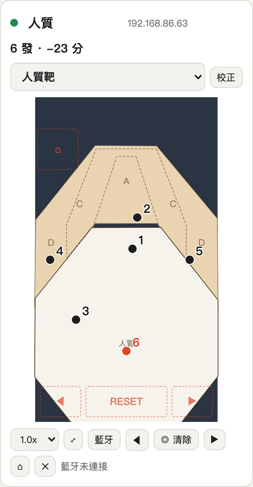
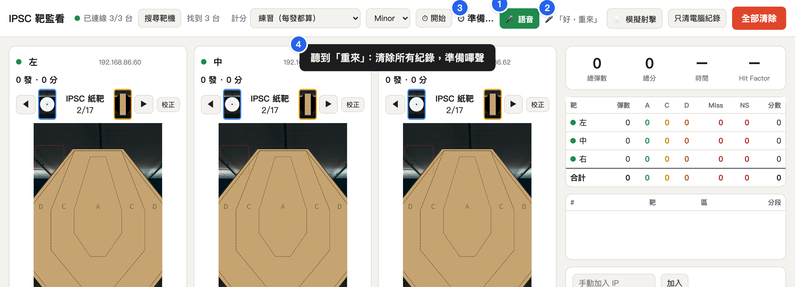
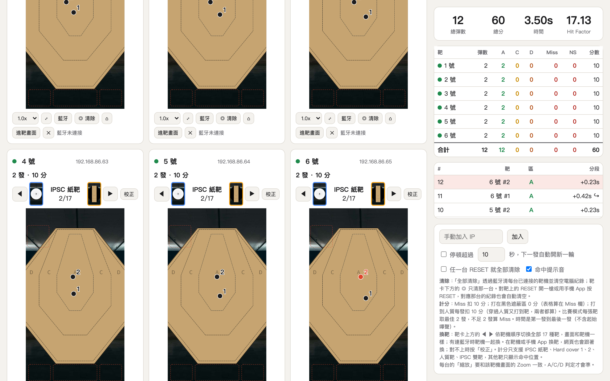

IPSC 靶監看
使用說明
在電腦上即時看每一發打在哪裡、統計多台靶機的成績，並遠端控制靶機。
適用 GR-WOLF FlexTarget IPSC 電子靶。
適用 GR-WOLF FlexTarget IPSC 電子靶。

| 需要的東西 | 說明 |
|---|---|
| 電腦與靶機在同一個 Wi-Fi | 命中資料走家裡的網路傳到電腦。訪客網路、或不同路由器底下會連不到。 |
| Chrome 或 Edge 瀏覽器 | 看成績用任何瀏覽器都可以；藍牙遙控只有 Chrome / Edge 支援。 |
| 藍牙（選用） | 要從電腦清除靶機彈痕、換靶時才需要。電腦要在靶機約 10 公尺內。 |
| 固定 IP（建議） | 在路由器替每台靶機固定 IP。網頁用 IP 分辨每一台，固定後名稱才不會對錯。 |
monitor 資料夾（index.html 和放靶圖的 target-images.js）複製到要看結果的電腦，用瀏覽器打開 index.html 即可。兩個檔案要放在一起。靶機每次開機都停在主選單，網頁也不知道靶機現在顯示什麼。請照下面的順序做一次，網頁和靶機才會對得上：

| 步驟 | 怎麼做／看到什麼 | |
|---|---|---|
| 1 | 網路連線（Wi-Fi） | 靶機開機後，在電腦打開 monitor/index.html。等左上角變成綠點「已連線 1/1 台」、靶卡名稱旁也是綠點。靶機剛開機要一點時間才連上 Wi-Fi，紅點時網頁會自己重試，不用重新整理。 |
| 2 | 藍牙連線 | 按靶卡下方的 藍牙，在跳出的清單選 GR-WOLF ET …。靶卡下方顯示「藍牙已連接」就完成。 |
| 3 | 按 進靶畫面 | 網頁先送「回主選單」，1.5 秒後送「確認」，靶機從主選單進入練習畫面，第一張一定是靶心，網頁也會切到靶心。請看靶機螢幕確認進對了（見下方提醒）。 |
| 4 | 選要用的靶 | 按靶卡上方的 ▶ 一次到「IPSC 紙靶」，或直接點右邊靶清單裡的靶。靶機和網頁一起換。 |
| 5 | 確認後開始打 | 確認靶機畫面和靶卡上的靶一樣（不一樣按 校正），就可以開槍。每一發依序標上 1、2、3…，最新一發是紅色；打完一輪對靶上的 RESET 補一槍或按 ◎ 清除。 |

| 項目 | 用途 | |
|---|---|---|
| 1 | 連線狀態 | 「已連線 3/3 台」表示全部連上（網路／Wi-Fi）。綠點＝全部正常，紅點＝有靶機沒連上（會自動重連）。 |
| 2 | 搜尋靶機 | 在同網段重新尋找靶機，找到新的會自動加入。打開網頁時也會在背景自動搜尋一次。 |
| 3 | 計分方式 | 練習／比賽、Minor／Major，詳見第 6 節。 |
| 4 | ⏱ 開始 | 清除所有靶機，隨機 3～6 秒後嗶聲開始計時，每台中兩發後念出時間，詳見第 9 節。 |
| 5 | 🎤 語音 | 打開後說「重來」，等於按「⏱ 開始」，詳見第 9 節。 |
| 6 | 🖱 模擬射擊 | 打開後在網頁靶圖上點一下就算中一發，用來不開槍測試，詳見第 8 節。 |
| 7 | 只清電腦紀錄 | 只清空網頁上的紀錄，靶機上的彈痕不會消失。 |
| 8 | 全部清除 | 用藍牙清除每一台已連藍牙的靶機，並清空網頁紀錄。 |
| 9 | 靶卡 | 每台靶機一張，顯示彈孔位置與按鈕，詳見第 4 節。 |
| 10 | 全場統計 | 總彈數、總分、時間、Hit Factor。 |
| 11 | 成績總表 | 每台的彈數、A／C／D／Miss／NS、分數，以及合計。 |
| 12 | 射擊順序 | 依時間列出每一發，詳見第 6 節。 |
| 13 | 設定 | 手動加入 IP、自動開新一輪、RESET 連動、提示音。 |

| 看到的 | 說明 |
|---|---|
| 綠點／紅點 | 這台靶機的網路連線狀態。 |
| 名稱（如「中」） | 點一下可以改名，例如「左」「中」「右」，會自動記住。 |
| IP | 這台靶機的網路位址。 |
| 2 發 · 8 分 | 這台目前的彈數與分數。 |
| ◀ 靶名 ▶ | 目前的靶和它在靶機順序中的位置（如 2/17）。◀ ▶ 換到上一張／下一張靶；有連藍牙時靶機一起換。 |
| ◀ ▶ 旁的小圖 | 多台靶機時才有：藍框是按 ◀ 會換到的靶、橘框是按 ▶ 會換到的靶；點小圖等於按旁邊的箭頭。 |
| 校正 | 靶機畫面和網頁不一樣時，選靶機實際顯示的靶。不送指令給靶機，但會清掉這台目前的紀錄。 |
| 紅色提醒列 | 網頁連上靶機時提醒確認靶種；靶種正確的話點一下就關閉。 |
和靶機螢幕上的靶一樣。底部紅色虛線框是靶機畫面上的 ◀ RESET ▶ 按鈕位置，左上角是 ⌂（回主選單）。打中這些框不算成績，會被當成按下按鈕。只有一台靶機（或按 ⤢ 放大）時，靶圖右邊有靶清單（第 5 節）。
| 按鈕 | 說明 |
|---|---|
| 1.0x | 縮放，要和這台靶機畫面下方的 Zoom 一樣。 |
| ⤢ | 放大這張靶並顯示靶清單（再按一次縮回）。 |
| 藍牙 | 連接這台的藍牙（第 10 節）。下方文字顯示藍牙狀態與「指令成功 ✓」。 |
| ◎ 清除 | 清除這一台的彈痕與紀錄（需藍牙）。 |
| ⌂ | 靶機回主選單（需藍牙）；網頁會把靶設成「靶心」。 |
| 進靶畫面 | 從主選單進入練習畫面（需藍牙），開機後使用，見第 2 節。 |
| ✕ | 從清單移除這台。 |
網頁的靶圖用的是靶機程式裡的原圖，位置、大小、縮放都照靶機設定，所以和靶機螢幕看起來一樣。靶卡上方的 ◀ ▶ 依靶機的順序切換全部 17 種靶：

| 操作 | 結果 |
|---|---|
| 靶卡的 ◀ ▶（有連藍牙） | 就是按靶機的 ◀ ▶：靶機換靶，網頁收到靶機的確認後跟著換 |
| 靶卡的 ◀ ▶（沒連藍牙） | 只換網頁，靶機要自己切換 |
| 手機 App 換靶、對靶機畫面的 ◀ ▶ 開槍 | 網頁自動跟著換 |
| 點靶清單裡的某一張 | 直接切到那張靶；有連藍牙時網頁自動連按 ◀ 或 ▶（走最短的方向，每次約 0.7 秒），靶機一起換 |
| 校正 | 選靶機畫面上實際顯示的靶，不會送指令給靶機 |
靶清單：只有一台靶機（或按 ⤢ 放大）時，靶圖右邊會列出全部 17 種靶，綠框是目前的靶、藍框是按 ◀ 會換到的、橘框是按 ▶ 會換到的（見第 2 節的圖）。有多台靶機時，改成在 ◀ ▶ 旁邊各放一張小圖。

分區判定和計分支援五種 IPSC 紙靶，其他 12 種靶只顯示命中位置和順序（靶名下方會註明「只顯示命中，不計分」）。
| 靶種 | 打在特殊區域 |
|---|---|
| IPSC 紙靶 | — |
| Hard cover 1 | 兩側黑色遮蔽區：0 分，表格算在 Miss 欄（和靶機一樣） |
| Hard cover 2 | 右側斜向黑色遮蔽區：同上 |
| 人質靶 | 打到人質每發扣 10 分，算在 NS 欄；穿過人質又打到靶，兩者都算（例如 A +5、人質 -10） |
| IPSC 雙靶 | 上下兩張紙靶，先判前面（下方）那張；射擊順序標示 A（下）、A（上）。比賽模式每張各取最佳 2 發 |
自訂靶（你上傳到靶機的圖網頁拿不到，顯示問號）；德州星、決鬥樹只畫靜止的樣子；Popper、Paddle 沒有倒下動畫。

| 成績總表 | 多了 NS 欄（打到人質的發數）。 |
| 總彈數 | 所有靶機加起來的發數。 |
| 總分 | 所有靶機分數的總和（最低 0）。 |
| 時間 | 用「⏱ 開始」時是嗶聲到每台中兩發的時間；否則是第一發到最後一發。 |
| Hit Factor | 總分 ÷ 時間。 |
最新一發在最上面，以紅底標示。「中 #1」表示打在「中」這台的第 1 發；「分段」是和上一發相隔的秒數。↪ 表示這一發換到另一台靶。
| 選項 | 規則 |
|---|---|
| 練習（預設） | 每一發都算分。 |
| 比賽 | 依 IPSC 規則，每張紙靶只取最好的 2 發；有效命中不足 2 發，差幾發就算幾個 Miss。 |
| Minor（預設） | A 5 分、C 3 分、D 1 分 |
| Major | A 5 分、C 4 分、D 2 分 |
| Miss | 扣 10 分。 |
| 遮蔽區 | 0 分；比賽模式不算有效命中。 |
| 人質（NS） | 每發扣 10 分，練習、比賽都算。 |

| 方式 | 靶機彈痕 | 網頁紀錄 | 備註 |
|---|---|---|---|
| 對靶上的 RESET 開一槍 | ✓ 那一台 | ✓ 那一台 | 不用走過去，那一槍不算成績 |
| 手機 App 按 RESET | ✓ 那一台 | ✓ 那一台 | |
| 靶卡上的 ◎ 清除 | ✓ 那一台 | ✓ 那一台 | 需要藍牙 |
| 上方 全部清除 | ✓ 已連藍牙的 | ✓ 全部 | 沒連藍牙的會提示幾台沒清到 |
| ⏱ 開始、說「重來」 | ✓ 已連藍牙的 | ✓ 全部 | 清除後開始嗶聲計時，見第 9 節 |
| 只清電腦紀錄、鍵盤 C 或 空白鍵 | ✗ | ✓ 全部 |
在右下設定勾選「任一台 RESET 就全部清除」，對任何一台 RESET 開槍時，網頁上所有靶機的紀錄都會清空（其他靶機上的彈痕仍要各自清除）。
勾選「停頓超過 N 秒，下一發自動開新一輪」，休息超過設定秒數後的下一發，會自動從新的一輪開始算。
不開槍也能測試計分、射擊順序和清除：按上方的 🖱 模擬射擊（按鈕變藍），在網頁的靶圖上點一下，就當成那個位置中了一發，射擊順序會標「（模擬）」。再按一次關閉。
| 點的位置 | 結果 |
|---|---|
| 靶上任何地方 | 當成一發命中，照目前的靶判 A／C／D／Miss |
| 靶圖底部的 RESET 框 | 清除這台的紀錄 |
| ◀ ▶ ⌂ 框 | 不會換靶（靶機收不到，會對不上）；要換靶請用靶卡上方的 ◀ ▶ |
網頁可以當計時器用：按上方的 ⏱ 開始，或打開語音後說「重來」，就會開始一輪計時射擊，不用回到電腦。
| 流程 | 說明 | |
|---|---|---|
| 1 | 檢查藍牙、清除 | 先確認每台靶機都連著藍牙（斷線的自動重連）；有靶機沒連藍牙就不會開始，並用語音提示「靶機沒有連藍牙，無法清除」。接著對每台靶機用藍牙按一下 ◀ 再按一下 ▶：靶機換靶再換回來時會重畫整張靶，彈痕和靶機上的統計都會清空，最後停在原本的靶；網頁紀錄也一起清空。上方顯示「⏱ 準備…」。 |
| 2 | 隨機 3～6 秒後「嗶」 | 嗶聲前約 2 秒會再用 ◀ ▶ 清除一次靶機和網頁，所以嗶聲響起時靶上一定是乾淨的。接著電腦喇叭發出一聲嗶，開始計時，上方顯示秒數和「已中 x/y 發」。 |
| 3 | 每台都中兩發就停止 | 每一台靶機都打中兩發的那一刻停止。計分的靶要打在 A／C／D（人質、遮蔽、Miss 不算）；不計分的靶任何命中都算。 |
| 4 | 2 秒後念出時間 | 用語音念出時間和 A／C／D 發數，例如「時間 3.52 秒，A 3 發，C 1 發，D 0 發」（時間到小數後兩位，發數是嗶聲後所有靶機加起來），畫面也跳出同樣的內容。上方和「時間」欄都顯示這個時間，Hit Factor 也改用它計算。點一下上方的時間可以再念一次。 |
計時中按「只清電腦紀錄」或「全部清除」會取消這一輪。嗶聲和念時間都由電腦喇叭播放，靶機本身不會嗶，喇叭音量要開大一點。

| 項目 | 說明 |
|---|---|
| 聽得懂的說法 | 「重來」「重新開始」「重新來」「重來一次」（句子裡含有就算，例如「好，重來」） |
| 防止誤觸 | 3 秒內重複說只算一次 |
| 沒連藍牙的靶機 | 只清網頁紀錄，提示會說幾台沒清到 |
python3 -m http.server，改開 http://localhost:8000/monitor/。| 按鈕 | 靶機會做什麼 |
|---|---|
| ◀ ▶、靶清單 | 換上一張／下一張靶；點靶清單會自動連按到那一張 |
| ◎ 清除 | 練習畫面：清除彈痕（RESET）；主選單：確認選取 |
| ⌂ | 回主選單 |
| 進靶畫面 | 回主選單 → 1.5 秒後確認，進入練習畫面（從靶心開始） |
| 上方 全部清除、語音「重來」 | 對每台已連藍牙的靶機送出清除 |

| 狀況 | 處理方式 |
|---|---|
| 左上角是紅點、顯示「已連線 0/1 台」 | 確認靶機已開機、和電腦在同一個 Wi-Fi；按「搜尋靶機」。若靶機換了 IP，搜尋會自動找到新的。 |
| 按了「只清電腦紀錄」，靶機上彈痕還在 | 這個按鈕只清網頁。要清靶機請用「全部清除」、靶卡的 ◎ 清除，或對 RESET 開一槍。 |
| 網頁判的區和靶機不一樣 | 檢查靶卡的縮放是否和靶機畫面的 Zoom 一致，以及靶卡上的靶是否和靶機畫面一樣（不一樣按「校正」）。 |
| 靶卡變成「靶心」 | 靶機回過主選單，重新進入練習畫面時是靶心。用靶卡的 ▶ 切回要用的靶（有藍牙時靶機一起換）。 |
| 藍牙按鈕沒反應 | 改用 Chrome 或 Edge；確認 macOS 已允許 Chrome 使用藍牙；仍不行時，在終端機執行 python3 -m http.server，改開 http://localhost:8000/monitor/。 |
| 「全部清除」後有靶機沒清到 | 那台沒有連藍牙。按該靶卡的「藍牙」連上後再試。 |
| 開機後怎麼進 IPSC 紙靶？ | 照第 2 節：等網路綠點 → 連藍牙 → 按「進靶畫面」→ 按 ▶ 一次。靶機無法開機就直接進紙靶。 |
| 按「進靶畫面」後靶機進到別的畫面 | 主選單的反白不在練習畫面那一項。回主選單把反白移到練習畫面，再按一次「進靶畫面」。 |
| 說「重來」後聽到「靶機沒有連藍牙，無法清除」 | 有靶機沒連藍牙（例如重新整理過網頁）。按那台靶卡下方的「藍牙」選裝置連上，再說一次「重來」。 |
| 打完兩發沒聽到秒數 | 看上方是否停在「⏱ x.xx 秒」：若還在跑，代表有一發沒算到（嗶聲前開槍，或被判成 Miss／人質／遮蔽，看射擊順序）。若已停止，檢查喇叭音量和分頁是否靜音，點一下上方的時間可以再念一次。 |
| 說「重來」沒反應 | 確認 🎤 語音 是綠色、旁邊有顯示聽到的字；電腦要能上網；Chrome 要允許麥克風（網址列旁的麥克風圖示）。仍不行時改用 http://localhost:8000/monitor/ 開網頁。 |
| 按 ◀ ▶ 或「進靶畫面」靶機沒反應 | 藍牙沒連上：看靶卡下方是否顯示「藍牙已連接」，沒有就按「藍牙」重新連。 |